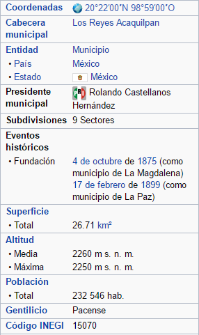

La Paz, conocido popularmente como Los Reyes La Paz, es un municipio en el estado de México, México. Está situado en el oriente del estado de México y al occidente del Distrito Federal, con el que limita, por lo que forma parte de la Zona Metropolitana de la Ciudad de México. El municipio cubre un área total de 26,71 km² y el censo del año 2005 divulgó una población de 232.546 habitantes. Su cabecera es la ciudad de Los Reyes Acaquilpan. El clima que predomina es el templado subhúmedo con lluvias en verano. Se encuentra, principalmente, sobre dos zonas orográficas: planicie lacustre con pendientes bajas en el oriente y la zona del volcán El Pino con pendientes variables entre 5% y 25%. El único cuerpo de agua es el río La Compañía.

{% endblock %}